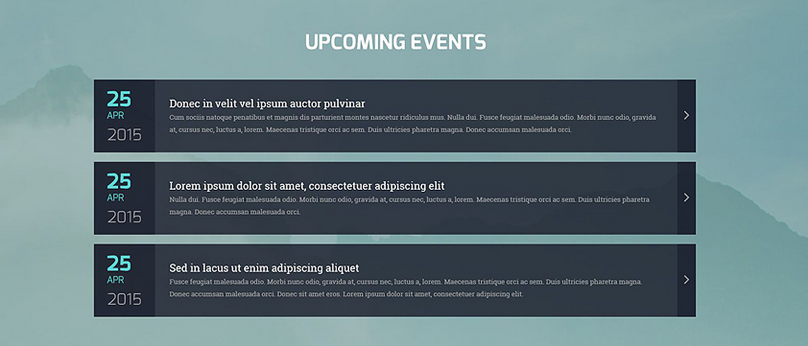

Layout and Color

Target Audience
Given the non-traditional layout and the very warm soothing colors this site would almost certainly appeal to individual consumers but not necessarily from a particular socioeconomic class. I cannot imagine a fortune 500 company going for such a color scheme or layout. If I had to narrow the pool a bit I would narrow it down to the same class of folks that would visit a spa either regularly or after receiving a birthday gift card which is just about everyone that is middle class and up.
Client/User Needs
There is a menu of items on the right that presumably would allow visitors to explore different options. Within each product detail page I would expect the ability to add the item to cart.
Critique
The layout and the color scheme are the two most eye catching features. The layout must offer a very nice surprise for folks and cause them to perk up and pay attention. It is a left to right design as opposed to a top down which is part of the surprise. You certainly couldn't do it the other way, right to left, at least not for most cultures, that would be too much of a shock and probably result in a high bounce rate. The company's purpose/mission statement/description immediately follows the title and calls to action immediately follow after that. It only takes a second for you to get your bearings after the surprise of the design.
The color scheme is soothing but full of energy at the same time. The primary color of gold could be used to indicate wealth but in this context I find that interpretation to be vulgar. Warmth, richness and illumination are more appropriate in this context even if you do not read a single word or interpret the background image. The maroon accents are similar to a red-brown color, an earthlike tone that provides a little grounding and naturalness to the page thus preventing the gold from taking over. This analogous color combination lends itself towards a feeling of serenity and healing.
Navigation

Target Audience
Given that the site is for the selling of antiques I would have to say that they are targeting an older and more affluent crowd or perhaps history buffs and professors with a fair amount discretionary income. I would imagine if they had a partnership with the antiques roadshow they could really broaden their audience. The navigation bar itself is very straightforward, simple and flat. Taken out of context I might not have been inclined to remark on it at all. It doesn't scream cutting edge. Is that in order to appeal to an older crowd or does it just fit well with the overall design. Perhaps all is true.
Client/User Needs
They clearly want the visitors to quickly recognize the various categories of Antiques on offer. The navigation menu is focused purely on product categories and doesn’t include links to Home or About Us.
Critique
The positioning of the navigation bar on the page below the hero image instead of at the top or the left is different but it works well because as soon as the page loads, at least on a standard 17” screen it is right at eye level. I noticed the nav bar before anything else. The subtle shadow effect also makes it appear to come off the page but upon a second glance only at the edges. I wonder what it would look like if the entire thing appeared off the page? Perhaps that much 3d would imply a fancy feature to interact with as opposed to a navigation. The Serif font adds a little class to the nav titles and the mahogany background compliments that class with a sense of refinement.
Testimonials

Target Audience
Young people, 26 and under and parents with kids of reading age.
Client/User Needs
To get folks to become a library card holders and motivate them to get into reading by showcasing popular books and offering unique services.
Critique
The testimonial area stands out for a couple of reasons, more so than many other sites. First, if you happen to take a look at the overall site design it sits within a vertical band of alternating and contrasting elements, each of which extends to either end of the page. The content above and below testimonials has a white background. So the contrast with adjacent elements and the total size devoted to it definitely marks this as a key feature of the site, even if it is further down the page. The other feature that makes it stand out is the photo. I am not sure if that is indeed the photo of the person who actually provided the testimonial but she is young and attractive so it does give one a moment's pause. Just a moment I swear!
Nav/Layout
Target Audience
I have to admit, at first I had absolutely no idea what this site was about or whom it was targeted to. It wasn't until I clicked on the NewQuest tile and scrolled half way down the modal that I realized they were a web design and development shop for ecommerce businesses with a passion for creativity and innovation. Question is, if I hadn’t been researching design would I have stayed longer than two seconds?
Client/User Needs
I get the sense that the site is truly a showcase of the company’s penchant for creative and innovative design. It is more about brand awareness and an attempt to motive research into the company and generate sales inquiries although it is not immediately obvious how one achieves that goal.
Critique
I have to say, other than the concept of a grid, in this case a 4x10 grid to be exact; no other design principles stand out. It is rather chaotic. When you look at it though you immediately understand that the tiles can be moved and organized in any way you wish. It is definitely very functional, at least in terms of researching the company, but I do not find it asthetically pleasing at all. I like the rebelliousness of this design and although I can't imagine having it serve as my main navigation and on my landing page I suspect it could be useful in other ways.
CTA
Target Audience
The avid jogger that is tech savvy and always looking to improve his or her performance.
Client/User Needs
To set goals and track ones progress against each of the goals as a form of continual motivation.
Critique
This CTA is apparent for a couple of reasons. It is rather large as CTA’s go, perhaps a little larger than normal and maybe not appropriate for sites that have more content to show or that have multiple CTA’s unless of course you wanted this one to be at the top of the hierarchy of calls to action. The very subtle shadow affect is a nice touch but it doesn’t contribute to the buttons conspicuousness nearly as much as the blurring affect that outlines the button as well as the horizontal line that extends across the whole page anchoring the button in the middle. The blurring affect could be quite useful in many design situations in that it allows the CTA to both blend into and stand out on the page simultaneously. I think this would be very good when positioned in front of a background with a picture however it might work with other backgrounds. The anchoring line is a limited use case though in my opinion, especially if the button is not front center.
What's New

Target Audience
This particular site is for the posh high-class country club crowd or for folks that need a place to host a special event like a wedding. Normally I think we all think money when we think country club, but this place is certainly different from the country club near me. This is for either old money or new money, but definitely people with money.
Client/User Needs
This particular component serves to showcase some of the latest goings on and what if offers only reinforces my audience characterization. They are showcasing a super car for their deluxe onsite detail service. Imagine if they threw a 1989 Ford Explorer on there. Talk about a moment of cognitive dissonance. Sure would be funny though.
Critique
The feature has a nice dynamic aspect that not only entices the user to interact it also provides additional information about what ever new item is being moused over via a sliding transparent overlay that matches the color scheme and dimensions of the information tile it sits on top of. You can essentially have your cake and eat it to, you can present a well planned image to suggest at the service and then offer a layover to provide additonal details.
About Me/Us
Target Audience
Anyone interested in working with an independent web developer although if I had to assess his skill off of this site and consequently his going rate I might change that to medium to large businesses.
Client/User Needs
If you need total front end websupport this guy can take care of you. If you need both front end and back end and your backend is php he can help you there too.
Critique
It's official, I am either a fish on land or a cat because bright shiney things that move mesmerise me. What better way to showcase some of your skill as a web developer than to throw up a three dimensional pyramid that wobbles and rotates on all axises. This pyramid does more than mesmerize though, it showcases the vendor's coding languages by having an image for each language on each side of the pyramid. After taking a look at the rest of his site I am admittedly a little jealous.
Footer

Target Audience
Businesses that would like to contract there web dev work out to an agency
Client/User Needs
If you need total web development support this agency may be right for you.
Critique
If I ever tell you that I have spent more than 5 minutes thinking about footers I would be lying. I think I have spent a total of one minute to date. After seeing this footer I had to ask myself why. Perhaps it depends on the site you are on and what you are trying to get from it. Usually if I am after a footer I am looking for contact information to either find someone to solve my problem or to explore an opportunity. In the case of the former you may be dealing with a service site that wants to make it hard to find contact info while a sales site wants to make it easy. This site is clearly a sales site in that case. The font is not of size legal and the icons are bright and contrast strongly with the background resulting in the fastest phone find time of any footer I have ever seen.
Calendar
Target Audience
Both upper middle class consumers and businesses
Client/User Needs
The intent of the site is to secure landscaping contracts. The images they have posted which may or may not represent their work varies from garden steps to full on golf courses.
Critique
I like this future events calendar because it is clean and uncluttered. A brief description of each event with the opportunity to explore deeper via what I would assume is a modal window as evidenced by the arrows at the far right of each box. That way you can explore each event further without leaving the page. This may only work because they have few events in any given year, if they have 50 or so I can't imagine they are going to want to have 50 event bars stacked on each other so in that case there may need to be another option for the entire year which does direct you elsewhere.
Home Page Hero

Target Audience
Cycling enthusiasts
Client/User Needs
This is for Specialized so they want to sell bikes. The focus here us clearly mountain bikes.
Critique
What struck me about this home page hero is its sense of visual hierarchy. You can't help but want to follow the biker as he goes deeper down into the trail. I suspect this would produce a little bit of longing to get back on to the trail yourself. As your eyes scan right you see the real intent of the image and that is to expose you to the bike frame they want to sell which has a dramatic angular design, just like the home page hero. The bike is also slightly obscured by the red filtering, just enough so that it doesn't work against the visual hierarchy.Finally, as your eyes come off the bike and back to center you see the drop down arrow that allows you to begin exploring the site.